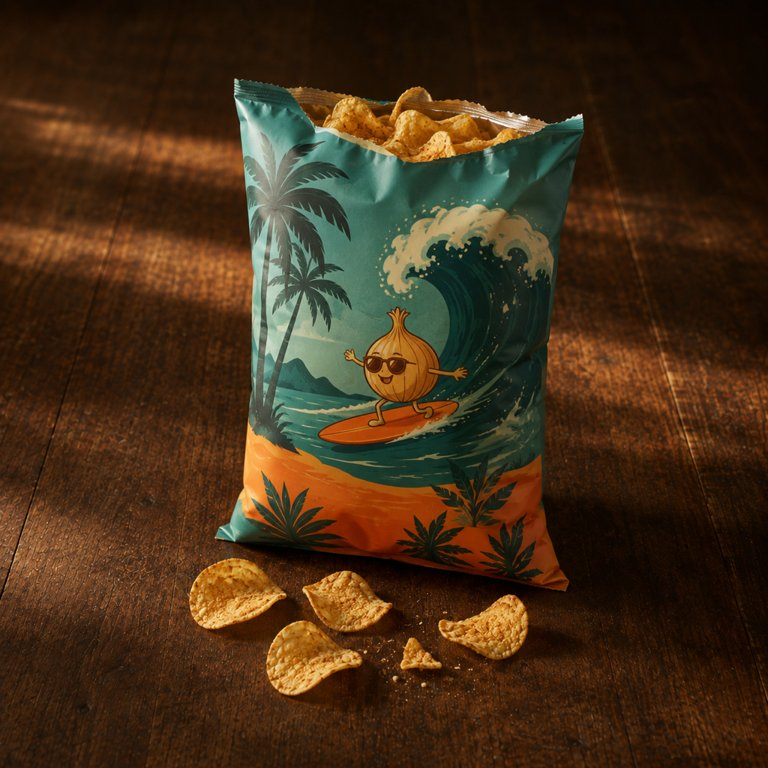

夏威夷洋葱味 · 第 1 片

盒盖内侧的便签：咸得像夏威夷的其他东西。家庭装，吃之前怀疑一下自己，吃完就不怀疑了，只剩渴。
这袋封边紧，捏住顶边要用点力，封边从一侧先裂，撕口往下跑偏。开的时候没有噗那一声，气是慢慢泄的，带一点轻喷。味道冲出来是甜洋葱，烤过的那种，跟着是蒜粉和炸油。手边和呼气里都留了洋葱味和油味。
- 包装
- 手伸进袋口，掏出一片厚的，硌手。
- 看
- 先挑一片卷得明显、厚边完整的，凹面积着浅粉，凸面一片油光。
- 闻
- 洋葱是甜的那种，不呛，像烤到发软的洋葱圈，后面有蒜粉、一点糖和油。
- 入口头两秒
- 第一片最硬，咬下去闷闷一声咔，再连着两声碎响，断下来的硬角掉在掌心。洋葱和蒜粉先到，转甜，盐很咸，在最后压上来。
- 化的方式
- 要比薄片多嚼好几下。高低不平的厚片先裂成硬角，再磨成粗颗粒，最后才软。主线是咸、明显的洋葱和香辛料，嚼到后面像焦糖化的洋葱。片子里的油嚼着往舌面渗。最后一两下薯味回来，甜洋葱和香料味留下。咸留在舌根，一直不散。
- 余味（大约 12 分钟散完）
- 0 分钟洋葱停在整个嘴里，甜咸的，呼气都是洋葱。手指上油亮，带浅粉。4 分钟甜退了，洋葱和一点辛留在舌根和喉咙口。10 分钟嘴里还有洋葱，说话能自己闻到。